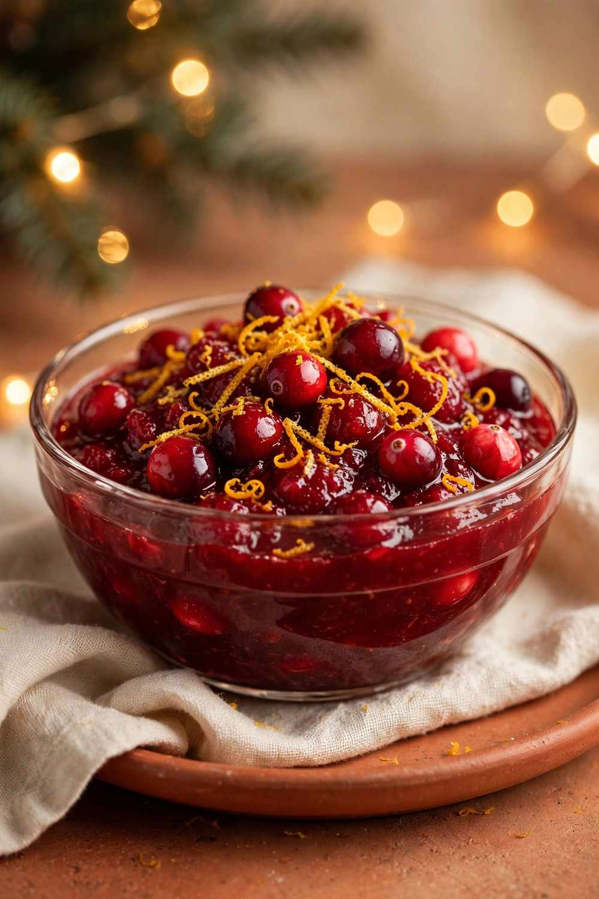
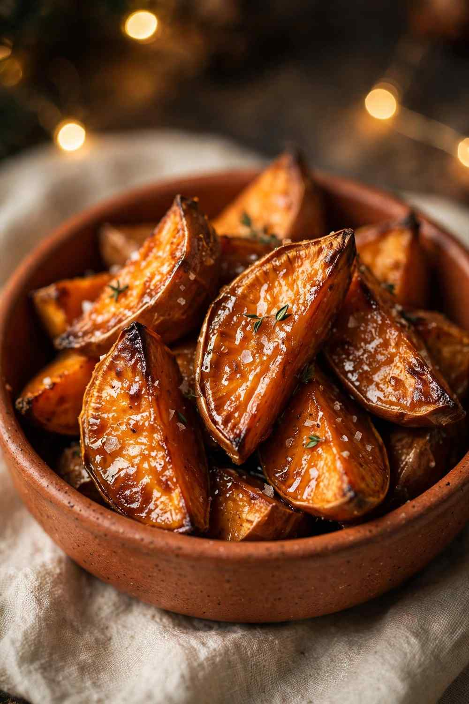
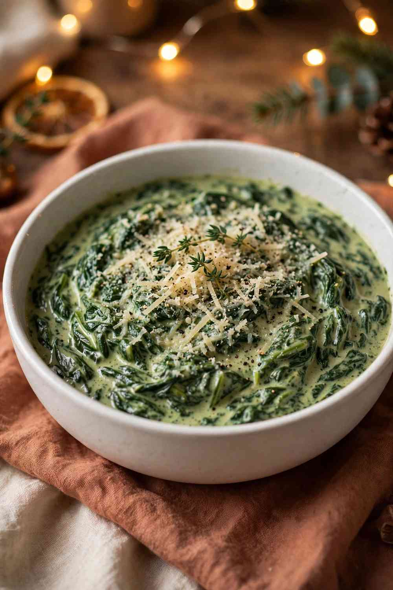
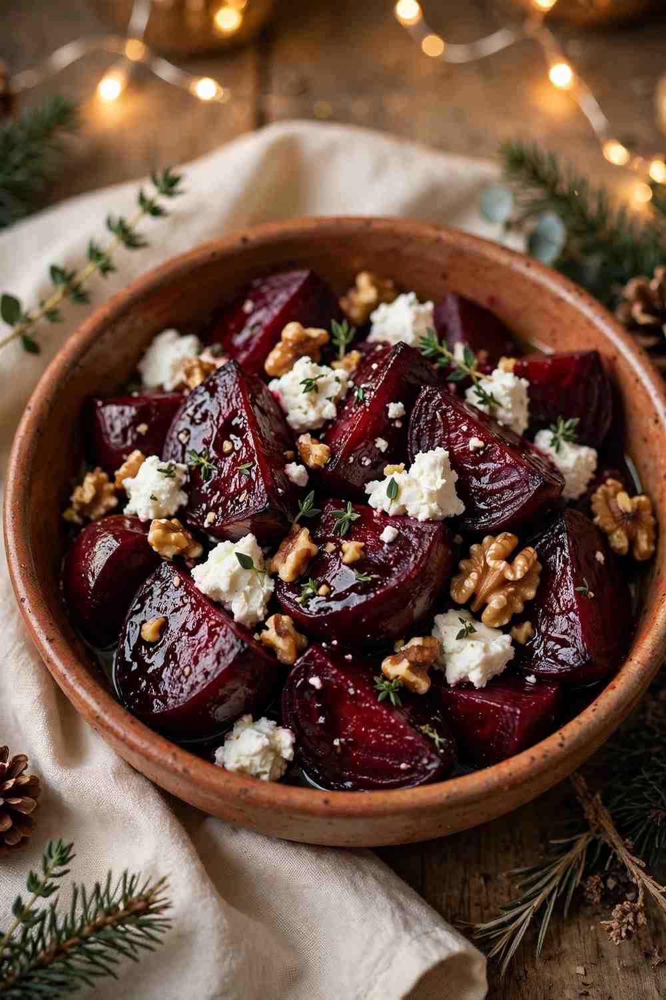
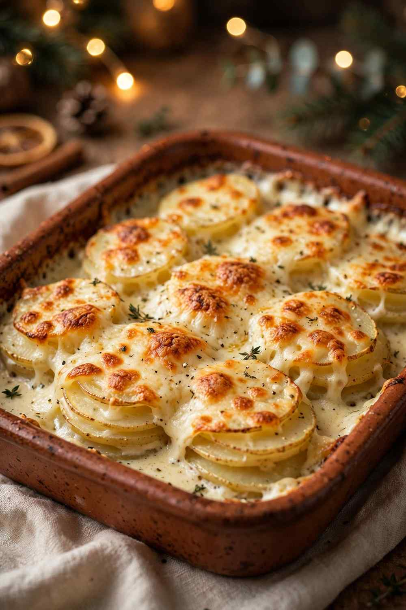
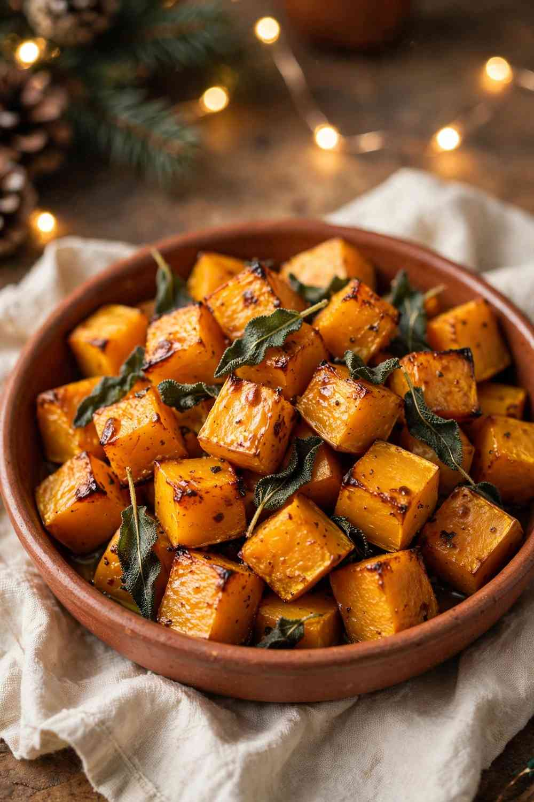
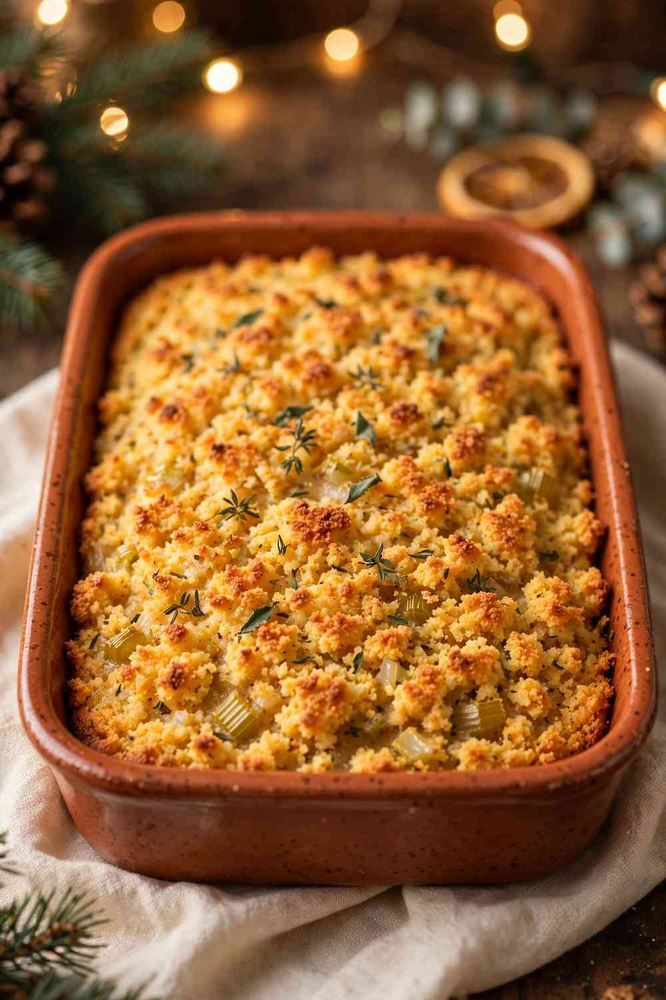
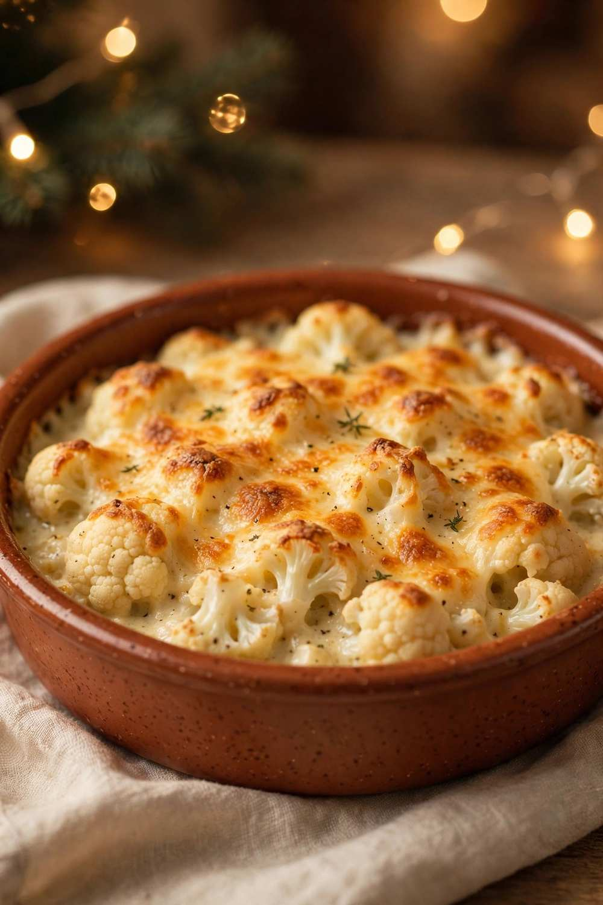
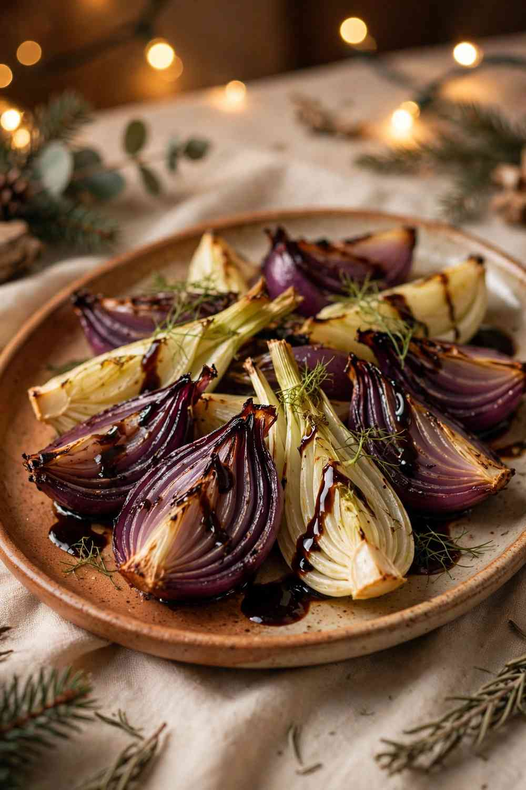
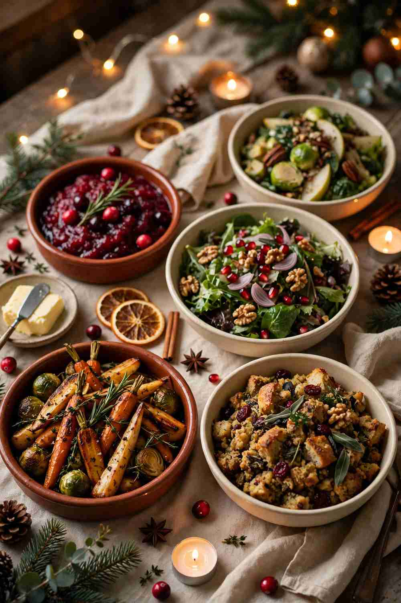

25+ Christmas Side Dishes for Your Holiday Table
📌 Save to Pinterest
Christmas dinner is only as good as its side dishes: the table fills up with roasted vegetables, creamy potatoes, golden stuffing, bright cranberry sauce and fresh salads, and everyone finds a favorite. This roundup gathers twenty-five side dishes for your holiday table — the classics your family expects, plus a few fresh ones worth adding. Make one or make them all; either way, the turkey will not be the only star on the table.
How to pick your Christmas sides
Pick a mix, not a single style: a roasted vegetable, a creamy potato, a stuffing, something bright and tangy, and a fresh salad cover every taste. If the oven is full, choose sides that roast alongside the turkey or set in the fridge — cranberry sauce, salads and make-ahead casseroles free up space. And if you are short on time, pick sides that come together in one dish and hold well, like roasted roots and gratins.
Good to know: Everything is written in American English, and measurements use US customary units — cups, tablespoons, and Fahrenheit — for cooks in the United States. Always follow safe food-handling guidance, and check labels for allergens when cooking for others.
Food safety: the stuffing and dressing contain eggs — bake until set; egg dishes should reach 160°F (71°C). Cook bacon until crisp..
Roasted vegetables & holiday classics
These are the sides most people picture when they think of a Christmas dinner — the ones that have been on the table for generations.
1. Garlic Butter Roasted Brussels Sprouts

Crispy edges, soft centers.
Ingredients
- 2 lbs Brussels sprouts
- 3 tbsp olive oil
- 4 garlic cloves
- 2 tbsp butter
- salt and pepper.
Directions
- Halve the sprouts and toss with oil, salt and pepper.
- Roast at 425°F for 25 minutes until crisp.
- Toss with garlic and butter in the last 5 minutes.
2. Creamy Garlic Mashed Potatoes

Buttery, smooth, make-ahead friendly.
Ingredients
- 3 lbs Yukon Gold potatoes
- 1/2 cup butter
- 1 cup warm milk
- 4 garlic cloves
- salt and pepper.
Directions
- Boil potatoes until tender and drain.
- Warm butter, milk and garlic together.
- Mash potatoes with the warm mixture until smooth.
3. Honey Glazed Carrots

Sweet carrots with a shiny glaze.
Ingredients
- 2 lbs carrots
- 3 tbsp honey
- 2 tbsp butter
- 1 tbsp brown sugar
- fresh thyme.
Directions
- Cut carrots into sticks and roast at 400°F for 20 minutes.
- Toss with honey, butter and brown sugar.
- Roast 10 more minutes until glazed.
4. Classic Bread Stuffing with Sage

Herby stuffing baked golden.
Ingredients
- 12 cups dried bread cubes
- 1 onion
- 3 celery stalks
- 1/2 cup butter
- 2 tsp sage
- 2 cups chicken broth
- 2 eggs.
Directions
- Cook onion and celery in butter until soft.
- Toss with bread, sage, broth and eggs.
- Bake covered at 350°F for 30 minutes, then uncovered for 15.
5. Green Bean Casserole

The classic, with crispy onions.
Ingredients
- 2 lbs green beans
- 1 can cream of mushroom soup
- 1/2 cup milk
- 1 cup shredded cheddar
- 1 1/2 cups fried onions.
Directions
- Blanch green beans for 4 minutes.
- Mix with soup, milk and cheese.
- Top with fried onions and bake at 350°F for 30 minutes.
Sauces, sweet potatoes & creamy sides
A little sweet, a little tangy, a little creamy — these sides balance the richness of the main course.
6. Cranberry Orange Sauce

Bright sauce, 15 minutes.
Ingredients
- 12 oz fresh cranberries
- 1 cup sugar
- 1 cup orange juice
- zest of 1 orange
- 1 cinnamon stick.
Directions
- Simmer sugar, juice and zest until the sugar dissolves.
- Add cranberries and cinnamon; cook until berries burst.
- Cool before serving.
7. Roasted Sweet Potatoes with Maple

Caramelized wedges.
Ingredients
- 3 lbs sweet potatoes
- 3 tbsp olive oil
- 2 tbsp maple syrup
- 1 tsp cinnamon
- salt.
Directions
- Cut into wedges and toss with oil and salt.
- Roast at 425°F for 30 minutes, turning once.
- Drizzle with maple syrup and cinnamon.
8. Creamed Spinach

Rich, garlicky and smooth.
Ingredients
- 2 lbs fresh spinach
- 2 tbsp butter
- 2 garlic cloves
- 1 cup cream
- 1/2 cup Parmesan
- pinch of nutmeg.
Directions
- Wilt spinach and squeeze dry.
- Cook garlic in butter, add cream and Parmesan.
- Stir in spinach and nutmeg and simmer 5 minutes.
9. Balsamic Roasted Beets

Earthy beets with a tangy glaze.
Ingredients
- 2 lbs beets
- 3 tbsp olive oil
- 2 tbsp balsamic vinegar
- 1 tbsp honey
- goat cheese
- walnuts.
Directions
- Peel and cube beets; toss with oil and salt.
- Roast at 400°F for 35 minutes.
- Toss with balsamic and honey; top with goat cheese and walnuts.
10. Cheesy Scalloped Potatoes

Thin slices in a creamy sauce.
Ingredients
- 3 lbs potatoes
- 2 cups cream
- 2 cups shredded Gruyere
- 3 garlic cloves
- 1 tsp thyme.
Directions
- Slice potatoes thin and layer in a greased dish.
- Heat cream with garlic and thyme; pour over.
- Top with cheese and bake at 375°F for 55 minutes.

Squash, dressing & salads
Squash and dressing bring the warmth, and a fresh salad keeps the table from feeling too heavy.
11. Roasted Butternut Squash with Sage

Sweet squash, crispy sage.
Ingredients
- 1 butternut squash
- 3 tbsp olive oil
- 8 sage leaves
- 2 tbsp brown sugar
- salt and pepper.
Directions
- Cube squash and toss with oil and salt.
- Roast at 425°F for 30 minutes.
- Add sage and brown sugar for the last 5 minutes.
12. Cornbread Dressing

Southern-style crumbly dressing.
Ingredients
- 6 cups crumbled cornbread
- 1 onion
- 2 celery stalks
- 1/2 cup butter
- 2 tsp poultry seasoning
- 2 cups chicken broth
- 2 eggs.
Directions
- Cook onion and celery in butter.
- Mix with cornbread, seasoning, broth and eggs.
- Bake at 350°F for 40 minutes.
13. Winter Kale and Apple Salad

Crunchy, bright and fresh.
Ingredients
- 2 bunches kale
- 2 apples
- 1/2 cup dried cranberries
- 1/2 cup pecans
- 1/4 cup olive oil
- 2 tbsp lemon juice
- 1 tbsp honey.
Directions
- Massage kale with a little oil until soft.
- Toss with apples, cranberries and pecans.
- Whisk oil, lemon and honey; dress just before serving.
14. Bacon-Wrapped Green Beans

Smoky bundles for the table.
Ingredients
- 1 lb green beans
- 8 slices bacon
- 2 tbsp brown sugar
- 1 tbsp soy sauce
- garlic powder.
Directions
- Blanch green beans for 3 minutes.
- Bundle 6–8 beans and wrap with bacon.
- Brush with brown sugar and soy sauce; bake at 400°F for 20 minutes.
Food safety: cook the bacon until crisp.
15. Roasted Parsnips and Carrots

Sweet roasted roots.
Ingredients
- 1 lb parsnips
- 1 lb carrots
- 3 tbsp olive oil
- 2 tbsp honey
- 1 tsp rosemary
- salt.
Directions
- Cut into sticks and toss with oil and salt.
- Roast at 425°F for 30 minutes, turning once.
- Drizzle with honey and rosemary.
Grains, gratins & roasted roots
Grains and gratins are the comfort food of the side-dish table, and roasted roots round it out.
16. Cranberry Walnut Wild Rice Pilaf

Nutty rice with festive color.
Ingredients
- 2 cups wild rice blend
- 4 cups broth
- 1/2 cup dried cranberries
- 1/2 cup walnuts
- 1 onion
- 2 tbsp butter.
Directions
- Cook rice in broth until tender, about 45 minutes.
- Cook onion in butter until soft.
- Stir in rice, cranberries and walnuts.
17. Cauliflower Gratin

Creamy cauliflower under a golden crust.
Ingredients
- 1 head cauliflower
- 2 tbsp butter
- 2 tbsp flour
- 1 1/2 cups milk
- 1 cup shredded cheddar
- 1/2 cup breadcrumbs.
Directions
- Steam cauliflower until just tender.
- Make a white sauce with butter, flour and milk; stir in cheese.
- Pour over cauliflower, top with breadcrumbs and bake at 375°F for 25 minutes.
18. Herb Roasted Potatoes

Crispy outside, fluffy inside.
Ingredients
- 3 lbs baby potatoes
- 1/4 cup olive oil
- 4 garlic cloves
- 1 tbsp rosemary
- 1 tsp thyme
- flaky salt.
Directions
- Halve potatoes and toss with oil, garlic and herbs.
- Roast cut-side down at 425°F for 35 minutes.
- Sprinkle with flaky salt.
19. Maple Roasted Acorn Squash

Sweet rings with a maple glaze.
Ingredients
- 2 acorn squash
- 3 tbsp maple syrup
- 2 tbsp butter
- 1 tsp cinnamon
- salt.
Directions
- Slice squash into rings and remove seeds.
- Brush with maple syrup and butter.
- Roast at 400°F for 30 minutes until tender.
20. Pomegranate Brussels Sprout Salad

Shaved sprouts with jewel seeds.
Ingredients
- 1 lb Brussels sprouts
- 1 cup pomegranate seeds
- 1/2 cup shaved Parmesan
- 1/4 cup olive oil
- 2 tbsp lemon juice
- 1 tbsp honey.
Directions
- Shave sprouts thin with a knife or mandoline.
- Toss with pomegranate and Parmesan.
- Whisk oil, lemon and honey; dress before serving.
Casseroles & bright finishes
These are the showpieces and the bright finishes — the dishes that make the whole table look like a celebration.
21. Sweet Potato Casserole with Marshmallows

The holiday classic.
Ingredients
- 3 lbs sweet potatoes
- 1/2 cup brown sugar
- 1/4 cup butter
- 1 tsp vanilla
- 2 cups mini marshmallows.
Directions
- Boil sweet potatoes until tender; mash with sugar, butter and vanilla.
- Spread in a dish and top with marshmallows.
- Bake at 350°F for 20 minutes until golden.
22. Garlic Butter Mushrooms

Savory mushrooms in minutes.
Ingredients
- 1 lb mushrooms
- 3 tbsp butter
- 3 garlic cloves
- 1 tbsp soy sauce
- fresh parsley.
Directions
- Halve mushrooms and cook in butter until browned.
- Add garlic and soy sauce; cook 2 more minutes.
- Finish with parsley.
23. Roasted Red Onion and Fennel

Sweet, caramelized wedges.
Ingredients
- 3 red onions
- 2 fennel bulbs
- 3 tbsp olive oil
- 1 tbsp balsamic vinegar
- salt and pepper.
Directions
- Cut onions and fennel into wedges.
- Toss with oil and salt; roast at 425°F for 30 minutes.
- Drizzle with balsamic before serving.
24. Christmas Waldorf Salad

Crisp apples, celery and walnuts.
Ingredients
- 3 apples
- 2 celery stalks
- 1 cup grapes
- 1/2 cup walnuts
- 1/2 cup mayonnaise
- 1 tbsp lemon juice.
Directions
- Dice apples and celery; halve grapes.
- Whisk mayonnaise with lemon juice.
- Toss everything together and chill.
25. Brown Butter Glazed Carrots and Parsnips

Nutty brown-butter finish.
Ingredients
- 1 lb carrots
- 1 lb parsnips
- 3 tbsp butter
- 1 tbsp honey
- 1 tsp thyme.
Directions
- Roast vegetables at 425°F for 30 minutes.
- Brown butter in a pan until nutty.
- Toss vegetables with brown butter, honey and thyme.

Serving & storage tips
Roast vegetables in a hot oven so the edges crisp — and give them space on the tray, or they will steam instead of roast. Make mashed potatoes and gratins ahead and reheat them covered, with a splash of milk or cream to loosen them. Cranberry sauce and salads keep in the fridge, so make them the day before and free up the oven. Store leftovers in airtight containers for up to four days, and reheat roasted sides in a hot oven so they crisp up again.
Related articles
More roundups from the same table:
- 25+ Christmas Breakfast Recipes for a Cozy Holiday Morning — casseroles, pancakes, cinnamon rolls and make-ahead bakes.
- 20+ Christmas Air Fryer Recipes for Easy Holiday Cooking — crispy appetizers, roasted vegetables and festive desserts.
- 35+ Easy Christmas Appetizers for a Crowd — dips, bites, cheese boards and warm starters for your holiday party.
- 30+ Christmas Cookie Recipes Everyone Will Love — classic, chocolate, spiced, filled and decorated cookies.
Keep exploring
- Browse the Lunch & Dinner roundups — mains and sides for midday and evening tables.
- Browse all six categories — breakfast, lunch and dinner, desserts, air fryer, healthy recipes, and appetizers.
- More about the kitchen — what The Tasty Recipe Co is and how it works.
About The Tasty Recipe Co: Learn how we research, organize and review our food collections — see our About Us and Editorial Policy pages.
Recipe results can vary with ingredients, equipment, and technique. See our Disclaimer for food-safety and allergy notes.